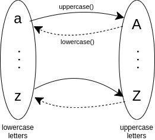
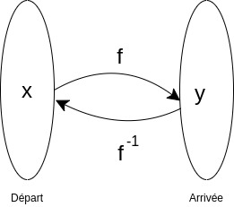

Dans une catégorie, les flèches sont aussi appelées des morphismes.
Dans la catégorie des ensembles
Page inspirée du cours de Bartosz Milewski
Dans la catégorie des ensembles
Set, les morphismes sont les fonctions qui nous sont familières.
Relations, fonctions
Bijection, Isomorphisme
Lorsqu'on a une fonction, le plus pratique et le plus simple à manipuler, c'est lorsqu'on a un mapping 1 - 1 entre les éléments de l'ensemble de départ et les éléments de l'ensemble d'arrivée. Bijection
Ce type de fonction s'appelle une bijection, on dit que la fonction est bijective.Pour chaque élément transformé par la fonction, on peut sans ambiguîté revenir à l'élément de départ ; on peut donc définir une fonction inverse.  Si on a une fonction
f, la fonction inverse est notée f-1
f(x) = y
f-1(y) = x
Le mapping 1 - 1 d'une bijection est exprimé par
f-1(f(x)) = x, ou encore f-1 o f(x) = x
f(f-1(y)) = y, ou encore f o f-1(y) = y
Isomorphisme
 Cette propriété s'exprime dans une catégorie par
Cette propriété s'exprime dans une catégorie par
g o f = idA et f o g = idB
Une fonction peut ne pas être bijective soit parce qu'elle est injective, soit parce qu'elle est surjective.
Injection, Monomorphisme
Si l'image de 2 éléments distinctsx1 et x2 ont la même image y, on ne peut pas revenir en arrière. Depuis y, on est incapable de choisir entre x1 et x2.
 Une fonction
Une fonction f est dite injective si cette situation ne peut pas se produire.
Avec les ensembles, ça s'exprime :
Pour tout
x1 et x2 appartenant à E,
f(x1) = f(x2) entraîne x1 = x2
En écriture mathématique :
∀ x1, x2 ∈ E, f(x1) = f(x2) => x1 = x2